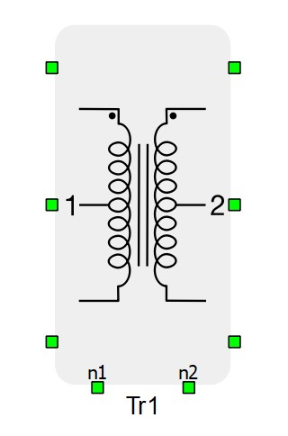
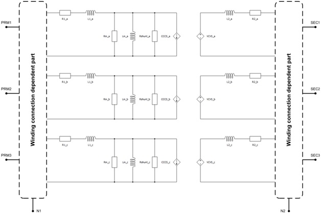
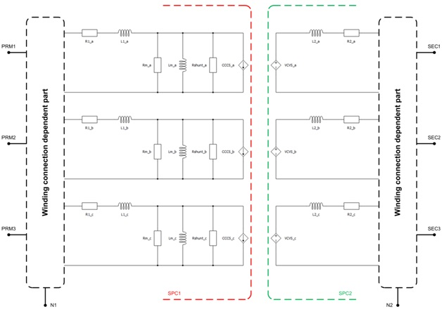
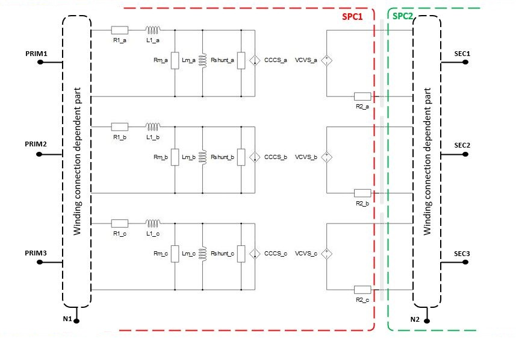

Three Phase Two Winding Transformer
Description of the Three Phase Two Winding Transformer component in Schematic Editor
Component description

Three Phase Two Winding Transformer is modeled as three single-phase transformers, meaning that only magnetic coupling between windings of the same phase are taken into account. The magnetization inductance Lm can be linear or with saturation, it is modeled on the primary side of the transformer. Core losses are modeled as Rm resistance located on the primary side of the transformer. Also, it is possible to neglect Lm and Rm by selecting Lm/Rm neglected in the Core model property. Finally, Hysteresis can also be simulated for slower dynamics. For more information, please refer to the Core model section.
- short circuit test – exciting a set of three-phase windings while the other set of windings is short circuited
- open circuit test – exciting a set of three-phase windings while the other set of windings is open circuited
Measurement results obtained from these tests and other information given on the transformer’s nameplate provide the necessary data for transformer characterization and modeling.
Winding excitation in the tests is three-phase positive sequence voltage. In addition to that, when characterizing a transformer and making a transformer model that includes mutual inductances between phases, it is necessary to perform the same tests, but with excitation being three-phase zero sequence voltage.
Parameters of the equivalent circuit are calculated as follows. During the short circuit test, the magnetization branch is considered shorted by the short circuited winding. So, total short circuit impedance as seen from the primary is:
Total short circuit resistance as seen from the primary:
Total short circuit inductance seen from the primary:
Primary and secondary side resistances and short circuit inductances are calculated using:
From the positive sequence open circuit test results, it is obtained:
Variables description:
Sn - nominal power of transformer
V1nph - primary side nominal phase voltage
V1nline - primary side nominal line voltage
fn - nominal frequency
N2/N1 - transfer ration
uscd - short circuit voltage (sc) – positive sequence (d)
Zscd - short circuit impedance (sc) – positive sequence (d)
Pscd - short circuit active power (sc) – positive sequence (d)
Rsc - short circuit resistance (sc)
Lscd - short circuit inductance (sc) – positive sequence (d)
R1 - resistance on primary side
R2 - resistance on secondary side
L1d - leakage inductance on primary side – positive sequence (d)
L2d - leakage inductance on secondary side – positive sequence (d)
iocd - open circuit (oc) excitation current – positive sequence (d)
i1nph - nominal phase current
Pocd - open circuit (oc) losses– positive sequence (d)
RFed (Rm) - resistance representing the core losses under nominal voltage – positive sequence (d)
iFed - current due to core losses under nominal voltage – positive sequence (d)
imd - magnetizing current – positive sequence (d)
Lmd - magnetizing inductance – positive sequence (d)
sqw1 - constant with value 1 for star connected primary winding, and 3 for delta connection of primary winding
sqw2 - constant with value 1 for star connected secondary winding, and 3 for delta connection of primary winding
A schematic block diagram of the three-phase two-winding transformer block with the corresponding component arrangement and naming is shown in Figure 2.

It should be noted that terminals N1 and N2 can be connected with the rest of the circuit in Schematic Editor only if the corresponding side is wye (Y) connected.
Embedded coupling
There are two possible options for embedded coupling in Three Phase Two Winding Transformer: Ideal Transformer based coupling and TLM coupling.
 Ideal Transformer Embedded
coupling type is ignored in TyphoonSim and will not
affect TyphoonSim simulation at all.
Ideal Transformer Embedded
coupling type is ignored in TyphoonSim and will not
affect TyphoonSim simulation at all.- TLM Embedded coupling type will be replaced with a corresponding inductor in TyphoonSim.
If Embedded coupling is Ideal Transformer, Ideal Transformer based coupling will be placed between the two windings of the transformer.
Figure 3 gives a visual representation of the division of transformer's equivalent circuit in the case where Embedded coupling is set to Ideal Transformer.

If Embedded coupling is set to TLM, the secondary winding inductor in the each phase will be replaced with a TLM coupling component. Inductance will be divided between coupling and embedded inductors (inductors will be hidden in the TLM). The TLM to embedded inductors ratio can be determined by the compiler, but it can also be specified explicitly. If the Automatic option is selected, the ratio will be determined by the discretization method. If the Manual option is selected, the ratio can be explicitly set to meet user requirements. For more information on TLM couplings please refer to Core couplings - TLM.
Figure 4 gives a schematic representation of the transformer's equivalent circuit when Embedded coupling is set to TLM.

Ports
- prm_1 (electrical)
- Primary winding port 1.
- prm_2 (electrical)
- Primary winding port 2.
- prm_3 (electrical)
- Primary winding port 3.
- n1 (electrical)
- Available if Winding 1 connection is set to Y
- Primary winding neutral port.
- sec_1 (electrical)
- Secondary winding port 1.
- sec_2 (electrical)
- Secondary winding port 2.
- sec_3 (electrical)
- Secondary winding port 3.
- n2 (electrical)
- Available if Winding 2 connection is set to Y
- Secondary winding neutral port.
- prm_1_2 (electrical)
- Available if Winding 1 connection is set to O
- Primary winding port 2.
- prm_2_1 (electrical)
- Available if Winding 1 connection is set to O
- Primary winding port 3.
- prm_2_2 (electrical)
- Available if Winding 1 connection is set to O
- Primary winding port 4.
- prm_3_1 (electrical)
- Available if Winding 1 connection is set to O
- Primary winding port 5.
- prm_3_2 (electrical)
- Available if Winding 1 connection is set to O
- Primary winding port 6.
- sec_1_2 (electrical)
- Available if Winding 2 connection is set to O
- Secondary winding port 2.
- sec_2_1 (electrical)
- Available if Winding 2 connection is set to O
- Secondary winding port 3.
- sec_2_2 (electrical)
- Available if Winding 2 connection is set to O
- Secondary winding port 4.
- sec_3_1 (electrical)
- Available if Winding 2 connection is set to O
- Secondary winding port 5.
- sec_3_2 (electrical)
- Available if Winding 2 connection is set to O
- Secondary winding port 6.
General (Tab)
- Input parameters
- Specifies parameters format (SI, pu, or SC and OC tests).
- Sn
- Available if Input parameters is set to pu or SC and OC tests.
- Nominal Power of the transformer [VA].
- f
- Available if Input parameters is set to pu or SC and OC tests.
- Nominal frequency [Hz].
- V1
- Rated line to line voltage of primary winding [Vrms].
- V2
- Rated line to line voltage of secondary winding [Vrms].
- r1
- Available if Input parameters is set to pu.
- Resistance of primary winding [pu].
- l1
- Available if Input parameters is set to pu.
- Leakage inductance of primary winding [pu].
- r2
- Available if Input parameters is set to pu.
- Resistance of secondary winding [pu].
- l2
- Available if Input parameters is set to pu.
- Leakage inductance of secondary winding [pu].
- R1
- Available if Input parameters is set to SI.
- Resistance of primary winding [Ω].
- L1
- Available if Input parameters is set to SI.
- Leakage inductance of primary winding [H].
- R2
- Available if Input parameters is set to SI.
- Resistance of secondary winding [Ω].
- L2
- Available if Input parameters is set to SI.
- Leakage inductance of secondary winding [H].
- usc1
- Available if Input parameters is set to SC and OC tests.
- Postive sequence short circuit voltage
- Psc1
- Available if Input parameters is set to SC and OC tests.
- Postive sequence short circuit losses
- Core model
- Selects transformer core model implementation.
- Several levels of model fidelity are available - linear, Non-linear, Rm/Lm neglected, or Hysteresis.
- rm
- Available if Input parameters is set to pu and Core model is set to Linear, Non-Linear, or Hysteresis.
- Resistance representing core losses [pu].
- lm
- Available if Input parameters is set to pu and Core model is set to Linear.
- Magnetization inductance [pu].
- Flux values
- Available if Core model is set to Non-Linear or to Hysteresis.
- List of magnetic flux values [Wb] or [pu].
- Current values
- Available if Core model is set to Non-Linear or to Hysteresis.
- List of current values [A] or [pu].
- Hysteresis flux values
- Available if Core model is set to Hysteresis
- Vector of mgnetizing flux for upper hysteresis [Wb] or [pu]
- Rm
- Available if Input parameters is set to SI and Core model is set to Linear, Non-Linear, or Hysteresis.
- Resistance representing core losses [Ω].
- Lm
- Available if Input parameters is set to SI and Core model is set to Linear.
- Magnetization inductance [H].
- ioc1
- Available if Input parameters is set to SC and OC tests and Core model is set to Linear, Non-Linear, or Hysteresis.
- Postive sequence no load excitation current
- Poc1
- Available if Input parameters is set to SC and OC tests and Core model is set to Linear, Non-Linear, or Hysteresis.
- Postive sequence no load losses
- Execution rate
- Available if Core model is set to Hysteresis.
- Defines the execution rate of measurement and signal processing components.
Winding connection (Tab)
- Winding 1 connection
-
The available connections are star (Y), delta (D), and open winding (O).
-
- Winding 2 connection
-
The available connections are star (Y), delta (D), and open winding (O).
-
- Clock number
- Available if Winding 2 connection is set to D or Y and Winding 1 connection is set to D or Y.
- Determines the phase displacement between primary and secondary side voltages
Coupling (Tab)
- Ideal Transformer Embedded
coupling type is ignored in TyphoonSim and will not
affect TyphoonSim simulation at all.
- TLM Embedded coupling type will be replaced with a corresponding inductor in TyphoonSim.
- Embedded coupling
- Inserts a coupling component in transformer - can be set to Ideal Transformer or TLM.
- You can read more information about Embedded coupling in the Embedded coupling section
- Type of coupling element
- Available if Embedded coupling is set to Ideal Transformer or TLM.
- Defines whether the inserted coupling component is a core or a device coupling. Only one of the inserted coupling components can be a device coupling.
- Device coupling is available only for Ideal Transformer based coupling.
- TLM/Embedded components ratio
- Available if Embedded coupling is set to TLM.
- Defines how coupling to embedded inductors ratio will be calculated- can be set to Manual or Automatic
- Ratio
- Available if TLM/Embedded components ratio is set to Manual.
- Used to specify coupling to embedded inductors ratio
- Rshunt
- Resistor placed in parallel with the current source on the primary side. It is used to provide increased model stability. Can be set to inf (infinite value).
- If Rshunt is set to inf, the resistor does not conduct current and has no effect on the circuit.